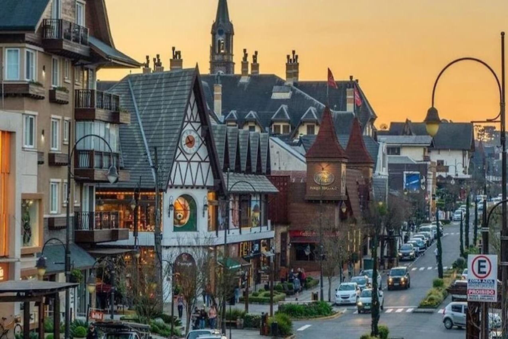

Gramado
Gramado é uma cidade charmosa localizada na Serra Gaúcha, no Rio Grande do Sul, e é famosa por sua arquitetura europeia, clima ameno e atrativos turísticos que lembram vilarejos alpinos. Conhecida como um dos principais destinos turísticos do Brasil, Gramado oferece uma mistura perfeita de natureza, cultura e gastronomia, sendo um destino ideal tanto para famílias quanto para casais.

O que fazer em Gramado
-
Lago Negro
Um dos cartões-postais de Gramado, o Lago Negro é rodeado por árvores importadas da Europa, como pinheiros e azaleias. O lago tem águas calmas e é perfeito para passeios de pedalinho.
-
Mini Mundo
Um parque ao ar livre com miniaturas detalhadas de construções famosas de várias partes do mundo. As réplicas são feitas em uma escala de 1:24, permitindo uma visão encantadora de castelos, ferrovias, e cidades inteiras.
-
Rua Coberta
Um dos pontos mais famosos de Gramado, a Rua Coberta é um corredor com diversos restaurantes, cafés e lojas, protegidos por uma estrutura com trepadeiras. É um ótimo lugar para relaxar e apreciar a vida local.
-
Cervejarias Artesanais
Gramado e sua região possuem várias cervejarias que produzem cervejas artesanais inspiradas nas tradições alemãs. As visitas às cervejarias oferecem degustações e tours de produção.
-
Snowland
Um parque temático coberto com neve artificial, onde os visitantes podem praticar esportes de inverno como esqui, snowboard e patinação no gelo.
-
Igreja São Pedro
Uma bela igreja de pedra no centro da cidade, que se destaca tanto por sua arquitetura quanto pelos belos vitrais e pela atmosfera tranquila.
Melhor Época para Visitar
Gramado é um destino para todas as estações. No inverno (junho a agosto), as temperaturas baixas e a chance de neblina criam um clima europeu, ideal para quem gosta de frio e chocolate quente. Durante o Natal Luz (novembro a janeiro), a cidade ganha uma decoração mágica, com luzes e espetáculos temáticos. Já na primavera e no verão, os jardins da cidade florescem, tornando o clima ameno e agradável para passeios ao ar livre.